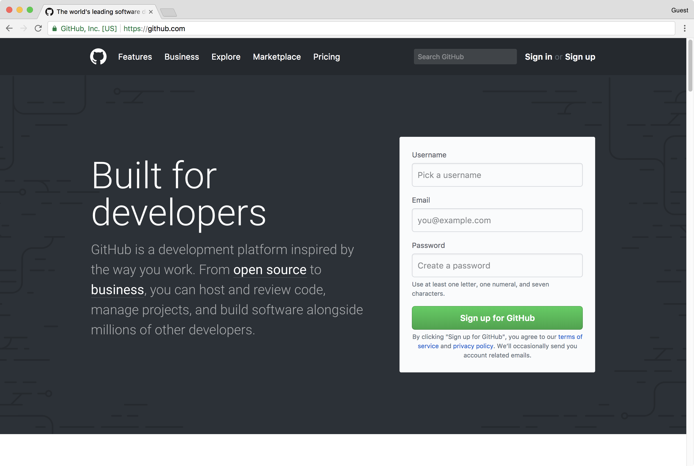

At a high level, GitHub is a website and cloud-based service that helps developers store and manage their code, as well as track and control changes to their code. To understand exactly what GitHub is, you need to know two connected principles:
Version control
Git
In this documentation, we’ll first explain these two principles. Then, we’ll dig into more about GitHub and how we can actually work with GitHub.
Version Control system
Version control helps developers track and manage changes to a software project’s code. As a software project grows, version control becomes essential. For example take WordPress…
As we all very well know that; WordPress is a pretty big project. If a core developer wanted to work on one specific part of the WordPress codebase, it wouldn’t be safe or efficient to directly edit the “official” source code.
Instead, version control lets developers safely work through branching and merging.
With branching, a developer duplicates part of the source code (called the repository). The developer can then safely make changes to that part of the code without affecting the rest of the project.
Then, once the developer gets his or her part of the code working properly, he or she can merge that code back into the main source code to make it official.
All of these changes are then tracked and can be reverted if needed.Developers can review project history to find out:
Which changes were made?
Who made the changes?
When were the changes made?
Why were changes needed?
Distributed VCS
Git is an example of a distributed version control system (DVCS) commonly used for open source and commercial software development. DVCSs allow full access to every file, branch, and iteration of a project, and allows every user access to a full and self-contained history of all changes. Unlike once popular centralized version control systems, DVCSs like Git don’t need a constant connection to a central repository. Developers can work anywhere and collaborate asynchronously from any time zone.
Without version control, team members are subject to redundant tasks, slower timelines, and multiple copies of a single project. To eliminate unnecessary work, Git and other VCSs give each contributor a unified and consistent view of a project, surfacing work that’s already in progress. Seeing a transparent history of changes, who made them, and how they contribute to the development of a project helps team members stay aligned while working independently.
Why Git
According to the latest Stack Overflow developer survey; more than 70 percent of developers use Git, making it the most-used VCS in the world. Git is commonly used for both open source and commercial software development, with significant benefits for individuals, teams and businesses.
Git lets developers see the entire timeline of their changes, decisions, and progression of any project in one place. From the moment they access the history of a project, the developer has all the context they need to understand it and start contributing.
Developers work in every time zone. With a DVCS like Git, collaboration can happen any time while maintaining source code integrity. Using branches, developers can safely propose changes to production code.
Businesses using Git can break down communication barriers between teams and keep them focused on doing their best work. Plus, Git makes it possible to align experts across a business to collaborate on major projects.
Git provides significant features for open source and common software development and most used VCS. Git and GitHub
Git is a specific open-source version control system created by Linus Torvalds in 2005.
Specifically, Git is a distributed version control system, which means that the entire codebase and history is available on every developer’s computer, which allows for easy branching and merging.
Now what is GitHub then?

GitHub is a for-profit company that offers a cloud-based Git repository hosting service. Essentially, it makes it a lot easier for individuals and teams to use Git for version control and collaboration.
GitHub’s interface is user-friendly enough so even novice coders can take advantage of Git. Without GitHub, using Git generally requires a bit more technical savvy and use of the command line.
As a company, GitHub makes money by selling hosted private code repositories, as well as other business-focused plans that make it easier for organizations to manage team members and security. We utilize Github extensively at Kinsta to manage and develop internal projects.
Git is initialized using Git Bash How to get started with GitHub
To get started with GitHub:
Sign up for a free GitHub account
Follow the GitHub Hello World guide to understand the most popular actions you’ll likely want to take
Sign Up for GitHub at their global website:https://github.com/Repository
A repository, or Git project, encompasses the entire collection of files and folders associated with a project, along with each file’s revision history. The file history appears as snapshots in time called commits, and the commits exist as a linked-list relationship, and can be organized into multiple lines of development called branches. Because Git is a DVCS, repositories are self-contained units and anyone who owns a copy of the repository can access the entire codebase and its history. Using the command line or other ease-of-use interfaces, a git repository also allows for: interaction with the history, cloning, creating branches, committing, merging, comparing changes across versions of code, and more.
Working in repositories keeps development projects organized and protected. Developers are encouraged to fix bugs, or create fresh features, without fear of derailing mainline development efforts. Git facilitates this through the use of topic branches: lightweight pointers to commits in history that can be easily created and deprecated when no longer needed.
Through platforms like GitHub, Git also provides more opportunities for project transparency and collaboration. Public repositories help teams work together to build the best possible final product.
Create new repo using new button and then adding you repo name chossing whether you want it to be public or private; then intialize readme and create the repoBasic Git Commands
To use Git, developers use specific commands to copy, create, change, and combine code. These commands can be executed directly from the command line or by using an application like GitHub Desktop or Git Kraken. Here are some common commands for using Git:
initializes a brand new Git repository and begins tracking an existing directory. It adds a hidden subfolder within the existing directory that houses the internal data structure required for version control.
creates a local copy of a project that already exists remotely. The clone includes all the project’s files, history, and branches.
stages a change. Git tracks changes to a developer’s codebase, but it’s necessary to stage and take a snapshot of the changes to include them in the project’s history. This command performs staging, the first part of that two-step process. Any changes that are staged will become a part of the next snapshot and a part of the project’s history. Staging and committing separately gives developers complete control over the history of their project without changing how they code and work.
saves the snapshot to the project history and completes the change-tracking process. In short, a commit functions like taking a photo. Anything that’s been staged with git add will become a part of the snapshot with
shows the status of changes as untracked, modified, or staged.
shows the branches being worked on locally.
merges lines of development together. This command is typically used to combine changes made on two distinct branches. For example, a developer would merge when they want to combine changes from a feature branch into the master branch for deployment.
updates the local line of development with updates from its remote counterpart. Developers use this command if a teammate has made commits to a branch on a remote, and they would like to reflect those changes in their local environment.
updates the remote repository with any commits made locally to a branch.
Git commands are executed by writing them in Git Bash.How GitHub fits in
GitHub is a Git hosting repository that provides developers with tools to ship better code through command line features, issues (threaded discussions), pull requests, code review, or the use of a collection of free and for-purchase apps in the GitHub Marketplace. With collaboration layers like the GitHub flow, a community of 15 million developers, and an ecosystem with hundreds of integrations, GitHub changes the way software is built.
GitHub Working
GitHub builds collaboration directly into the development process. Work is organized into repositories, where developers can outline requirements or direction and set expectations for team members. Then, using the GitHub flow, developers simply create a branch to work on updates, commit changes to save them, open a pull request to propose and discuss changes, and merge pull requests once everyone is on the same page.
GitHub Flow
The GitHub flow is a lightweight, branch-based workflow built around core Git commands used by teams around the globe—including ours.
The GitHub flow has six steps, each with distinct benefits when implemented:
The GitHub flow has six steps, each with distinct benefits when implemented:
Create a branch: Topic branches created from the canonical deployment branch (usually master) allow teams to contribute to many parallel efforts. Short-lived topic branches, in particular, keep teams focused and results in quick ships.
Add commits: Snapshots of development efforts within a branch create safe, revertible points in the project’s history.
Open a pull request: Pull requests publicize a project’s ongoing efforts and set the tone for a transparent development process.
Discuss and review code: Teams participate in code reviews by commenting, testing, and reviewing open pull requests. Code review is at the core of an open and participatory culture.
Merge: Upon clicking merge, GitHub automatically performs the equivalent of a local ‘git merge’ operation. GitHub also keeps the entire branch development history on the merged pull request.
Deploy: Teams can choose the best release cycles or incorporate continuous integration tools and operate with the assurance that code on the deployment branch has gone through a robust workflow.
Collaborative Development Model
There are two primary ways people collaborate on GitHub:
Shared repository
Fork and pull
With a shared repository, individuals and teams are explicitly designated as contributors with read, write, or administrator access. This simple permission structure, combined with features like protected branches and Marketplace, helps teams progress quickly when they adopt GitHub.
For an open source project, or for projects to which anyone can contribute, managing individual permissions can be challenging, but a fork and pull model allows anyone who can view the project to contribute. A fork is a copy of a project under an developer’s personal account. Every developer has full control of their fork and is free to implement a fix or new feature. Work completed in forks is either kept separate, or is surfaced back to the original project via a pull request. There, maintainers can review the suggested changes before they’re merged.